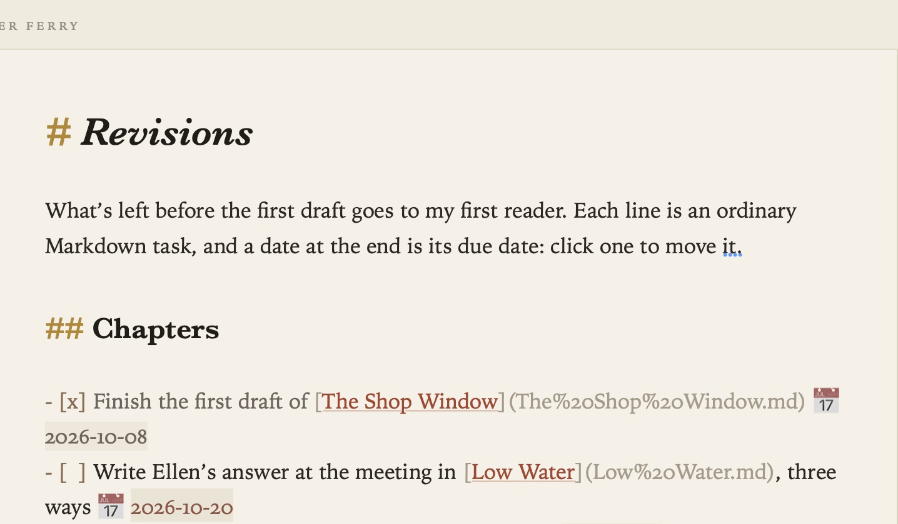
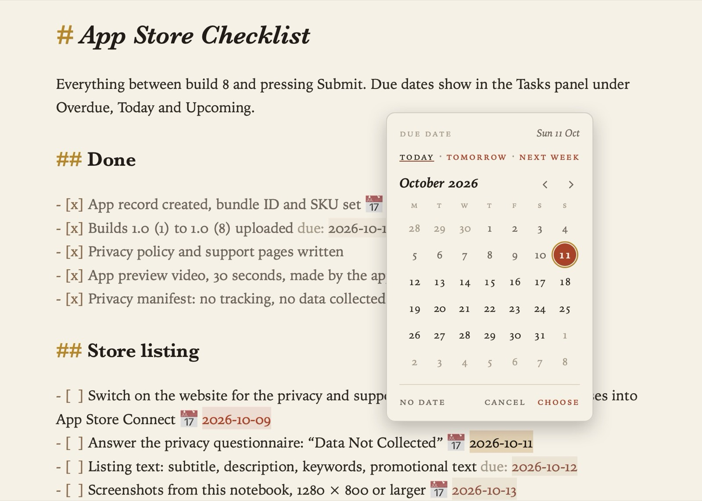
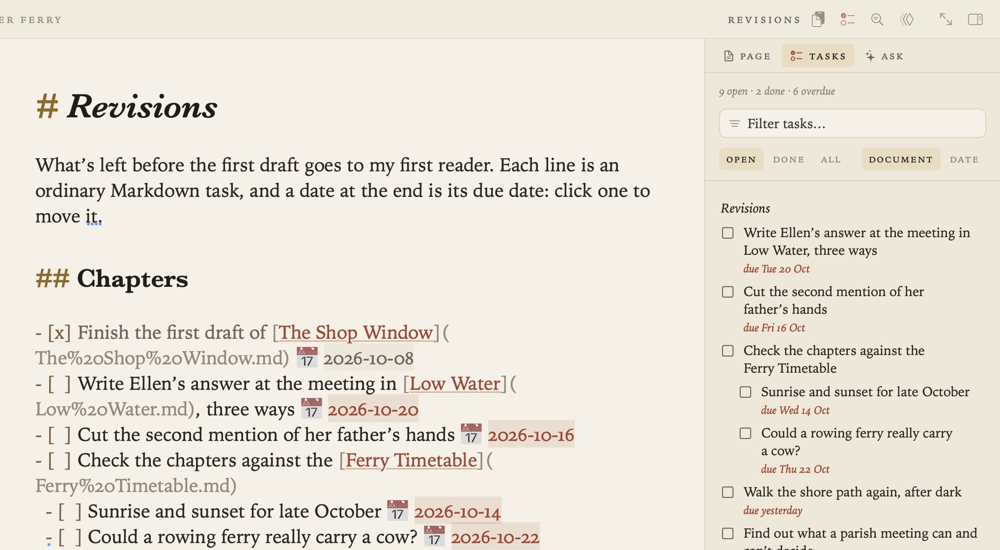

Tasks and Due Dates
Tasks in Grasmere are ordinary Markdown checkboxes, written in any document. Grasmere gathers them in one list, and a date at the end of a task gives it a due date.
Writing tasks
- [ ] Sow green manure on the potato bed
- [x] Lift the potatoes

- Click a box to tick or untick it. The cursor and the page stay where they are.
- Format ▸ Tick or Untick Task (⌘↩) does the same for the line you’re on.
- Tasks can be nested, like any list.
Due dates
Put a date at the end of a task, written either way:
- [ ] Felt the shed roof 📅 2026-10-17
- [ ] Order a trailer load due: 2026-10-14
The date is shown as a chip: today’s is highlighted, and a date that has passed on an open task is shown in a warning colour.
Click a date to pick another day from a calendar. Today, Tomorrow and Next week are a click away, the arrow keys and Return work too, and No Date takes the date off. Only the date changes; the document keeps it as plain text, with the 📅 or due: you used.
To give a task a date, right-click it and choose Set Due Date, or use Format ▸ Due Date.

Every task in one place (⇧⌘T)
Go ▸ Tasks (⇧⌘T) gathers every task in the project into the margin.

- Document groups them under the documents they’re in. Date groups them under Overdue, Today and Upcoming.
- Open, Done and All choose which tasks to show, and the filter box narrows them by their words.
- Tick a task here and it’s ticked in its document. Click a due date to change it.
- Click a task to open its document at that line, or ⌥-click to open it beside the page.
Tips
- The 📅 form is the one the Obsidian Tasks plugin uses, so tasks you bring from Obsidian keep their dates.
- How dates are shown in the Tasks list follows Settings ▸ General ▸ Date order. In your documents they always stay year first, so they sort the same everywhere.